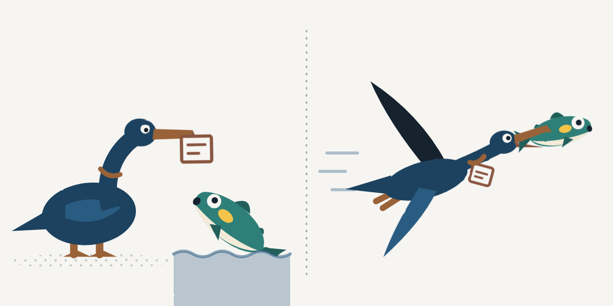

大洲の暮らし ・ 出典: 南海放送「愛媛県のゆるキャラ・キャラクター625種類一覧」、大洲市「うつつじ デザインマニュアル」ほか（情報源日付: 2026-08-15） ・ 約12分で読める
大洲のキャラクターを数えたら17体。鵜が2羽いて、龍は1体もいなかった
 メモう
メモう
大洲のキャラクター、ぜんぶで何体おるか知っとる?
数えてみたら17体。鵜が2羽おって、龍は1体もおらんかったんよ。
市の「うつつじ」は、申し込めばタダで使えるんだって。メモう！
3行でいうと調べた資料 27本
- 大洲市内のキャラクターを数えたら17体。南海放送の県内一覧に11体、ほかに6体を見つけた
- 市の公式キャラクター「うつつじ」は、小・中・高校生の361点から2025年に生まれた。申請すれば無料で使える
- 鵜がもとのキャラクターは2羽。龍は、県内の一覧の338行にも1体もいなかった
2025年の春、広報おおずに見慣れない鳥が載った。頭にツツジを咲かせて、腰みのに鮎をはさんでいる。大洲市の公式キャラクター「うつつじ」である。
大洲には、その前からキャラクターがいた。ご当地グルメの「O級くん」は、着ぐるみになって催しに出ている。高校にも、小学校にも、社協にも、農協にもいる。
では、全部で何体いるのか。数えたことがなかったので、数えてみた。
絵は、それぞれの持ち主のものなので、この記事には載せていない。記事の下の「出典・参考にした資料」に、キャラクターの名前を頭に付けたリンクを並べた。そこから、それぞれのページで絵を見られる。
大洲には、何体いるのか
見つけたのは17体である。
出発点にしたのは、南海放送が2026年8月に出した、県内のキャラクターの一覧だ。市町ごとに名前と肩書きが並んでいて、大洲市の所には11体が載っている。その11体を、持ち主の公式のページや市の資料で1体ずつ確かめた。確かめるうちに、一覧に載っていないものが6体出てきた。
まず、一覧の11体。
持ち主の公式ページと市の資料で確かめた。絵は、記事の下の出典のリンクから見られる
キャラクターうつつじ
- 持ち主
- 大洲市
- もとになったもの
- うかいの鵜と、冨士山のツツジ
- 生まれ
- 2025年1月11日に発表。小・中・高校生の361点から
キャラクターO級くん
- 持ち主
- 大洲特産品開発普及委員会
- もとになったもの
- 公式の説明は見つからなかった。読みは「おーきゅうくん」
- 生まれ
- 2011年3月に決定。約600件から、小・中・高校生の人気投票で
キャラクター三ツ星ちゃん
- 持ち主
- 大洲特産品開発普及委員会
- もとになったもの
- 公式の説明は見つからなかった
- 生まれ
- O級くんと同じ
キャラクターつらいにゃん
- 持ち主
- 長高水族館(愛媛県立長浜高等学校)
- もとになったもの
- ネコ。青島から長浜に来て、頭を魚にかじられている
- 生まれ
- 分からなかった
キャラクターとうじゅくん
- 持ち主
- 愛媛県立大洲高等学校
- もとになったもの
- 中江藤樹
- 生まれ
- 2013年8月8日。美術部の生徒が作った
キャラクターうーちゃん
- 持ち主
- 大洲市社会福祉協議会
- もとになったもの
- 鵜飼の鵜と、ハート
- 生まれ
- 2014年。113作品から、人気投票と選考委員会で
キャラクターみよぽん
- 持ち主
- 三善地区
- もとになったもの
- 頭の上に一本杉。ハチマキに「三」、体に「善」
- 生まれ
- 2018年(平成30年)。地区内でデザインを公募
キャラクターたいきくん
- 持ち主
- JA愛媛たいき
- もとになったもの
- 太陽をいっぱい浴びて育った「果実」
- 生まれ
- 分からなかった
キャラクター久米っ子玄道くん
- 持ち主
- 大洲市立久米小学校
- もとになったもの
- 矢野玄道
- 生まれ
- 分からなかった
キャラクターZIPPY
- 持ち主
- 国立大洲青少年交流の家
- もとになったもの
- 分からなかった
- 生まれ
- 分からなかった
キャラクターあいちゃん
- 持ち主
- たいき産直市 愛たい菜(JA愛媛たいき)
- もとになったもの
- 分からなかった
- 生まれ
- 分からなかった
「分からなかった」と書いた所は、公式のページに説明が見当たらなかった所である。
いちばん設定が込み入っていたのは、つらいにゃんだ。長高水族館が書いた紹介文は、こうである。
ネコで有名な大洲市青島から、長浜にやって来たよ。長高水族館を見学してたら、カクレクマノミのクマミンに頭をかじられちゃったんだ。
ゆるキャラグランプリ「つらいにゃん」の紹介文(所属: 長高水族館)
頭にのっているのは、帽子ではなく魚だった。その魚にも「クマミン」という名前がある。
次に、一覧に載っていなかった6体。
11体を確かめるうちに見つけたもの
キャラクターあゆきち
- 持ち主
- 大洲市(うつつじの友だち)
- もとになったもの
- 鮎。うつつじの腰みのにはさまっている
- 生まれ
- うつつじと同じ
キャラクタークマミン
- 持ち主
- 長高水族館
- もとになったもの
- カクレクマノミ。つらいにゃんの頭をかじっている
- 生まれ
- 分からなかった
キャラクターひじまる
- 持ち主
- 国土交通省 山鳥坂ダム工事事務所
- もとになったもの
- ビーバー。川にダムを造るイメージから
- 生まれ
- 2005年度(平成17年度)から使用。名前は2015年度(平成27年度)に公募
キャラクターとくまく〜ん、もたる、ひらる
- 持ち主
- 大洲市立平野中学校の生徒会
- もとになったもの
- 分からなかった
- 生まれ
- 分からなかった
平野中学校は、3体で1組である。学校のページに「平野中ゆるキャラ」として絵が載っている。
ひじまるは、山鳥坂ダムを造っている国の事務所のキャラクターだ。事務所の職員が書いた論文は、ダムの地元を「大洲市肱川町」と書いている。この論文によると、ひじまるには、はじめの10年のあいだ名前が無かった。名前の由来は「肱(川)」と「丸、守る」だという。
生まれた年が分かったものを、古い順に並べる。
生まれた年が分かったものだけ
- 2005年度ひじまるが使われはじめる。名前はまだ無い
- 2011年3月O級くんと三ツ星ちゃんが決まる
- 2013年8月とうじゅくんが生まれる
- 2014年うーちゃんが決まる
- 2015年度ひじまるの名前が、公募で決まる
- 2018年みよぽんが生まれる
- 2025年1月うつつじが発表される
探したのは、消防、図書館、大洲城、観光協会、商工会議所と、市内の小・中学校と高校の公式サイトの最初のページである。そこにキャラクターの記載が無かった所は、数に入れていない。SNSだけにいるものや、店のキャラクターは、探しきれていない。17体は「見つけた数」で、「全部の数」ではない。
県内では、多いほうなのか
南海放送の一覧で比べると、20市町のうち7番目である。
一覧を、市町ごとに行の数で数えた。1行に2体以上が入っている行があるので、行の数は、題の「625種類」とは合わない。行は全部で338あった。
| 順 | 市町 | 行の数 |
|---|---|---|
| 1 | 松山市 | 130 |
| 2 | 今治市 | 35 |
| 3 | 県南部の1市 | 25 |
| 4 | 新居浜市 | 24 |
| 5 | 西条市 | 16 |
| 5 | 愛南町 | 16 |
| 7 | 四国中央市 | 11 |
| 7 | 大洲市 | 11 |
| 9 | 伊予市 | 10 |
| 10 | 八幡浜市 | 9 |
| 11 | 東温市 | 8 |
| 12 | 西予市 | 7 |
| 12 | 松前町 | 7 |
| 14 | 久万高原町 | 6 |
| 14 | 砥部町 | 6 |
| 16 | 内子町 | 5 |
| 17 | 伊方町 | 4 |
| 17 | 鬼北町 | 4 |
| 19 | 上島町 | 3 |
| 20 | 松野町 | 1 |
松山市が130行で、全体の38.5％を占める。大洲市は11行で、四国中央市と並んで7番目。となりの八幡浜市は9行、西予市は7行、内子町は5行だった。
これは、南海放送が1つの記事で拾った範囲の数である。大洲市に、一覧に無いものが6体あったように、ほかの市町にも載っていないものがあるはずだ。順位は目安である。
うつつじは、いつ、どうやって生まれたのか
2025年1月11日に発表された。きっかけは、合併20周年である。
大洲市は2005年(平成17年)1月11日に、大洲市・長浜町・肱川町・河辺村が合併してできた。20年の節目に、市は記念の事業を20並べた。2024年3月の市議会で、市はその新しい事業の1つに「御当地キャラクターデザイン募集事業」を挙げている。市内の小・中・高校生から、キャラクターを募集する事業だ。
集まった絵は361点。市のデザインマニュアルは、こう書いている。
大洲市合併20周年の節目をきっかけに、市内の小・中・高校生から「大洲らしい」キャラクターを募集したところ361点もの応募があり、最優秀賞に選ばれた作品を基に大洲市の公式キャラクター「うつつじ」が誕生しました。
大洲市「うつつじ デザインマニュアル」(令和7年3月)
原案を描いたのは、市内の高校生である。2025年1月11日の合併20周年記念式典で、最優秀作品として発表された。広報おおずは3月号の12ページで、「大洲市公式キャラクター誕生!」と紹介した。
名前は、2つのものをつなげてある。
大洲市の象徴でもある「うかい」の「鵜」と「冨士山」の「ツツジ」を合体させて「うつつじ」というキャラクター名になりました。
大洲市「うつつじ デザインマニュアル」(令和7年3月)
ツツジは、合併した2005年の11月に「大洲市の花木」に決まっている。
設定は細かい。マニュアルのプロフィールから、いくつか写す。
| 項目 | 中身 |
|---|---|
| 誕生日 | 1月11日 |
| 役職 | 大洲市PR特命係長 |
| 年俸 | いもたき1年分 |
| すきな食べ物 | 志ぐれ・大洲の野菜 |
| 性格 | 好奇心旺盛で能天気(でも慎み深い努力家になりたいと思っている。) |
誕生日の1月11日は、合併の日とも、発表の日とも同じ日付である。
腰みのにはさまっている鮎にも、名前がある。「あゆきち」だ。鵜は鮎をとる鳥である。広報は、あゆきちを「うつつじのご飯ではなくお友達」と書いている。
うつつじの絵は、だれでも使えるのか
申請すれば、無料で使える。
市のページ(2025年4月18日更新)は、こう知らせている。
大洲市公式キャラクター「うつつじ」とロゴデザインが企業や個人でも利用できるようになりました。
大洲市「大洲市公式キャラクター「うつつじ」及びロゴデザインの使用について」
決まりは、このページと、市の取扱要綱と、デザインマニュアルに書いてある。
使うときの決まり
- 使用料は無料
- 使う前に、申請書を市の企画情報課に出す。紙でも、えひめ電子申請システムでもよい
- 許諾されると、番号が通知される。その番号を、原則として絵の近くに書く
- 使える期間は、原則として2年以内
- できあがったら、使用報告書を出す
- 表情やポーズ、色、縦横の比率は変えられない。高さ2センチ以下でも使えない
申請書が要らない場合
- 大洲市と、市が入っている団体が使うとき
- 市内の学校などが、教育のために使うとき
- 報道機関が、報道や広報のために使うとき
申請書が要らない場合も、使用報告書は出すことになっている。市が、使った商品や会社をすすめたり認めたりするものではない、という注意書きもある。
この記事にうつつじの絵が無いのは、申請をしていないからだ。
うつつじの着ぐるみがあるかどうかは、分からなかった。市の2つのページ、マニュアル、要綱、広報の3月号、市議会の会議録を見たが、着ぐるみの記載は見つからなかった。
O級くんは、どうやって決まったのか
約600件の絵から、子どもたちの投票で決まった。うつつじより14年早い、2011年のことである。
O級くんと三ツ星ちゃんは、大洲のご当地グルメを広めるキャラクターだ。2013年3月の市議会で、市はこう答えている。
平成22年11月、Ｏ級ご当地グルメの取り組みを広くＰＲしていくためのキャラクターＯ級くんと三ツ星ちゃんのデザインを市外も含め広く募集し、約600件の中から市内小・中学生、高校生約1,000名による人気投票を行い、平成23年３月に現行のデザインを決定いたしました。
平成25年3月大洲市議会定例会 3日目の答弁
うつつじは、描いたのが大洲の小・中・高校生だった。O級くんは、選んだのが大洲の小・中・高校生だった。
着ぐるみは2012年(平成24年)3月にできた。同じ答弁は、うかい宣伝隊の出発式や大洲まつりに出たことを挙げて、こう続けている。
今後は貸し出しを行うなど露出をふやし、Ｏ級くんがＯ級ご当地グルメのゆるキャラとしてだけでなく、大洲市を代表するゆるキャラとして認知されるよう努めてまいりたいと考えております。
平成25年3月大洲市議会定例会 3日目の答弁
絵の権利を持っているのは、市ではない。「大洲特産品開発普及委員会」という団体で、事務局が市役所の中にある。2022年(令和4年)1月31日に、使い方の決まりができた。こちらも、申請すれば無料で使える。申請書には、O級くんの着ぐるみを使う欄もある。
市が20年を振り返った年表(広報おおず2025年1月号)には、2011年3月の所に、O級くんの決定が載っている。「大洲市公式キャラクター」という肩書きは、2025年に生まれたうつつじが持つことになった。O級くんは、いまも「ご当地グルメ宣伝キャラクター」として市のページに載っている。
鵜は何羽いるのか。龍はいるのか
17体のうち、鵜は2羽いた。龍は1体もいなかった。
鵜は、市のうつつじと、社協のうーちゃんである。社協は、うーちゃんの絵をこう説明している。
大洲市社会福祉協議会とその周辺の風土や自然をイメージし、ハートを鵜飼の鵜をモチーフにしてシンプルに親しみやすくデザインしました。
大洲市社会福祉協議会「大洲市社協ゆるキャラが決定しました!」
うーちゃんは2014年に、113作品の中から決まった。うつつじより11年早い。大洲のうかいは、2つの団体がそれぞれキャラクターにするくらい、大洲の顔になっている。
龍は、県内に広げても見つからなかった。南海放送の一覧の338行に、名前や肩書きに「龍」「竜」の字が入るものは無い。
大洲には臥龍山荘がある。それでも、龍のキャラクターは、探した範囲にはいなかった。臥龍山荘と、近くの温泉「臥龍の湯」の公式サイトにも、キャラクターの記載は見当たらなかった。
このサイトにも、キャラクターがいる
このサイトの記事のはじめで話している鳥は、「メモう」という。うかいの鵜が、魚のかわりにメモをくわえている。首には、鵜飼の手縄を1本巻いた。2026年8月に作った。
数えてみて分かった。見つけた範囲では、メモうは大洲で3羽目の鵜だった。
2026年10月、メモうに相方を作った。鮎である。
鵜と鮎の組み合わせは、市の公式キャラクターと同じだ。うつつじの腰みのには、あゆきちがはさまっている。それでも鮎にしたのは、鵜の首の縄に、こういう話があるからである。岐阜の長良川の鵜飼を紹介する観光庁の解説は、縄の締め具合をこう書いている。
鵜が大きい魚を飲み込めないが、小さい魚は飲み込めるようにしておくのが、ちょうど良い締め具合だ。
観光庁 地域観光資源の多言語解説文データベース「鵜飼の一日」
首に縄を巻いた鵜は、大きい魚を飲みこめない。メモうの首にも、縄がある。だから、メモうは鮎をくわえても、飲みこめないことにした。
鮎は、メモうのくちばしに乗って、一緒に飛ぶ。くちばしがふさがるので、メモは首の縄にはさむ。

メモうは、空から全体を見て、数字を調べる。鮎は、近くで1つを見て、分からないことを聞く。川の中の話だけは、鮎のほうが詳しい。
名前は、まだ決めていない。
メモうも鮎も、このサイトが勝手に描いた絵である。市とも、うつつじやあゆきちとも、関係がない。
調べても分からなかったこと
- O級くんと三ツ星ちゃんが、何をもとにした絵なのか
- つらいにゃん、たいきくん、久米っ子玄道くん、あいちゃんが、いつ生まれたのか
- ZIPPYが、何をもとにしたキャラクターなのか。施設の公式サイトには、連絡先の字に「zippy」があるだけで、説明は無かった
- 平野中学校の3体の、どれがどの名前なのか
- うつつじの着ぐるみがあるのか
数えてみて
17体を、持ち主で分けてみた。
四角1つが1体
- 学校 7体
- 大洲市 2体
- 大洲特産品開発普及委員会 2体
- JA愛媛たいき 2体
- 国の施設と事務所 2体
- 社協 1体
- 三善地区 1体
いちばん多いのは学校で、7体いる。長高水族館に2体、大洲高校に1体、久米小学校に1体、平野中学校に3体である。
市が権利を持つのは、うつつじとあゆきちの2体だけだった。大洲特産品開発普及委員会、JA愛媛たいき、国の施設と事務所が2体ずつ。社協と三善地区が1体ずつである。
うつつじは高校生の絵から生まれた。O級くんは小・中・高校生が選んだ。とうじゅくんは美術部の生徒が作った。生まれ方が分かったものを並べると、子どもたちが描くか、選ぶかしたものが目立つ。
出典・参考にした資料
愛媛県のゆるキャラ・キャラクター625種類一覧／南海放送 RNBエンタメディア(2026年8月15日掲載。県内20市町のキャラクターの名前と肩書き。大洲市は11行。市町ごとの行の数は、このページから数えた) うつつじ：大洲市公式キャラクター「うつつじ」誕生!／大洲市(2025年5月29日更新。絵とプロフィール) うつつじ：大洲市公式キャラクター「うつつじ」及びロゴデザインの使用について／大洲市(2025年4月18日更新。使用料、申請、許諾番号、使用報告書) うつつじ：うつつじ デザインマニュアル／大洲市(令和7年3月。361点、名前の由来、プロフィール、禁止事項) 大洲市シンボルマーク等の使用に関する取扱要綱／大洲市(令和2年9月16日要綱第120号。令和7年4月1日施行の改正あり。使用期間は原則2年以内) 広報おおず 2025年3月号／大洲市(2025年3月発行。12ページ「大洲市公式キャラクター誕生!」、2ページの記念式典、3ページの361作品) 広報おおず 2025年1月号／大洲市(2025年1月発行。4ページの20年の年表、16ページの記念式典の次第) 令和6年3月大洲市議会定例会 会議録 2日目／大洲市(2024年3月。合併20周年の20事業と、御当地キャラクターデザイン募集事業) O級くん・三ツ星ちゃん：大洲市ご当地グルメ宣伝キャラクターO級くん、三ツ星ちゃんの使用について／大洲市(2022年1月24日更新。絵と申請の方法) O級グルメキャラクターデザインの使用に関する取扱要領／大洲特産品開発普及委員会(令和4年1月31日。権利の持ち主、申請書の着ぐるみの欄) 平成25年3月大洲市議会定例会 会議録 3日目／大洲市(2013年3月。O級くんと三ツ星ちゃんの公募、人気投票、着ぐるみ) O級くん：Ｏ級くん／ゆるナビ(2026年10月4日確認。読みと自己紹介) つらいにゃん：つらいにゃん(愛媛県)／ゆるキャラグランプリ(2026年10月4日確認。所属は長高水族館。自己紹介とクマミン) つらいにゃん：School Guide Book 2025／愛媛県立長浜高等学校(2025年度の学校案内。「長浜高校水族館オリジナルキャラクター つらいにゃん」) とうじゅくん：「とうじゅくん」と「とうじゅの夢」／愛媛県立大洲高等学校(2026年10月4日確認。2013年8月8日誕生、モデルは中江藤樹) うーちゃん：大洲市社協ゆるキャラが決定しました!／大洲市社会福祉協議会(2026年10月4日確認。113作品、人気投票、鵜飼の鵜がモチーフ) みよぽん：広報おおず 2024年12月号 14ページ／大洲市(2024年12月発行。平成30年に誕生、頭の上に一本杉) みよぽん：大洲市立三善小学校(2026年10月4日確認。最初のページに絵) たいきくん：ごあいさつ・JA愛媛たいきの概況／JA愛媛たいき(2026年10月4日確認。「果実」をイメージ) 久米っ子玄道くん：大洲市立久米小学校(2026年10月4日確認。最初のページに絵と肩書き) ZIPPY：国立大洲青少年交流の家(2026年10月4日確認。キャラクターの説明は無い。連絡先の字に zippy がある) あいちゃん：愛たい菜＠ハッピーバースディ(営農日記)／JA愛媛たいき(2017年4月24日掲載。「愛たい菜のキャラクター」として名前が出る) ひじまる：魅力あるダム建設へ〜こころをつかむ広報 with ひじまる〜／国土交通省 四国地方整備局(令和5年度の論文。平成17年度から使用、モチーフはビーバー、平成27年度に名前を公募) とくまく〜ん・もたる・ひらる：大洲市立平野中学校(2026年10月4日確認。最初のページの「ゆるキャラ紹介」) 鵜飼の一日／観光庁 地域観光資源の多言語解説文データベース(2019年度作成。岐阜の長良川鵜飼の解説。鵜の首に巻く縄の締め具合) 臥龍山荘 公式サイト(2026年10月4日確認。キャラクターの記載は見当たらなかった) 大洲 臥龍の湯 公式サイト(2026年10月4日確認。キャラクターの記載は見当たらなかった)この記事をサイトに掲載した日: 2026/10/04